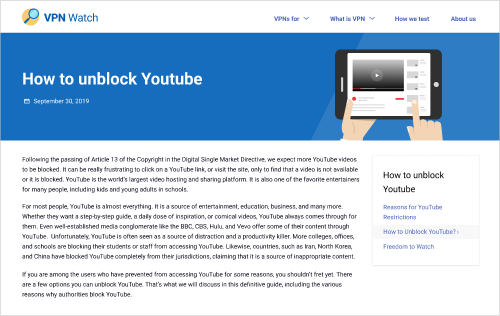

Запуск MVP версии
Сперва мы решили выпустить MVP-версию и не тратить большое количество ресурсов на дизайн, графику и разработку. Было важно получить ключевые метрики, а так же было необходимо сразу выпустить статьи для индексации сайта.
Результаты
Сайт хорошо индексировался, были хорошо подобраны тематики и статьи, но юзеры довольно быстро покидали страницы во время чтения. Мы запустили несколько А/Б тестов на существующих страницах, которые показали, что страницы с большим количеством графики и инфографики лучше удерживают пользователя на странице, увеличилась глубина просмотра.
